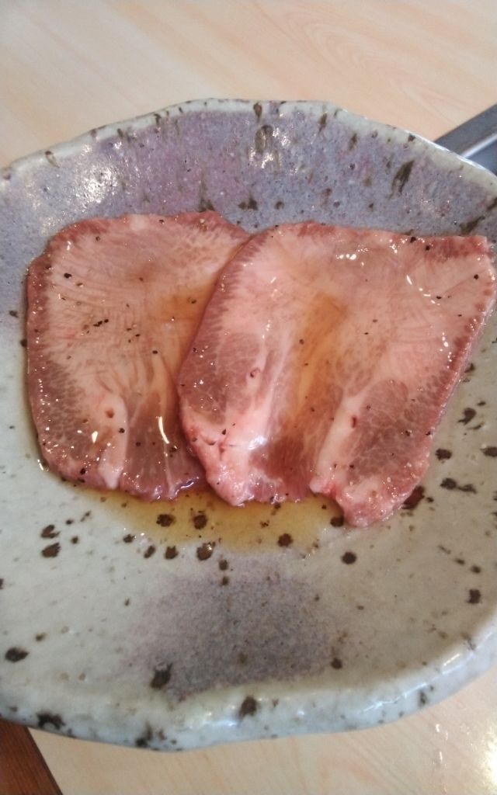
上タンJO-TAN
厚みを取って切り出します。特上タンは入荷のない日もございます。
月曜は、月に一度ほどお休みをいただきます。お出かけ前にお電話でお確かめくださいませ。
東京・芝浦の食肉市場から、その日の黒毛和牛を。
夕方五時、のれんを掛けてお待ちしております。
小上がりの座敷で、ゆっくりお焼きくださいませ。
ご予約のお電話は16時からお受けしております。
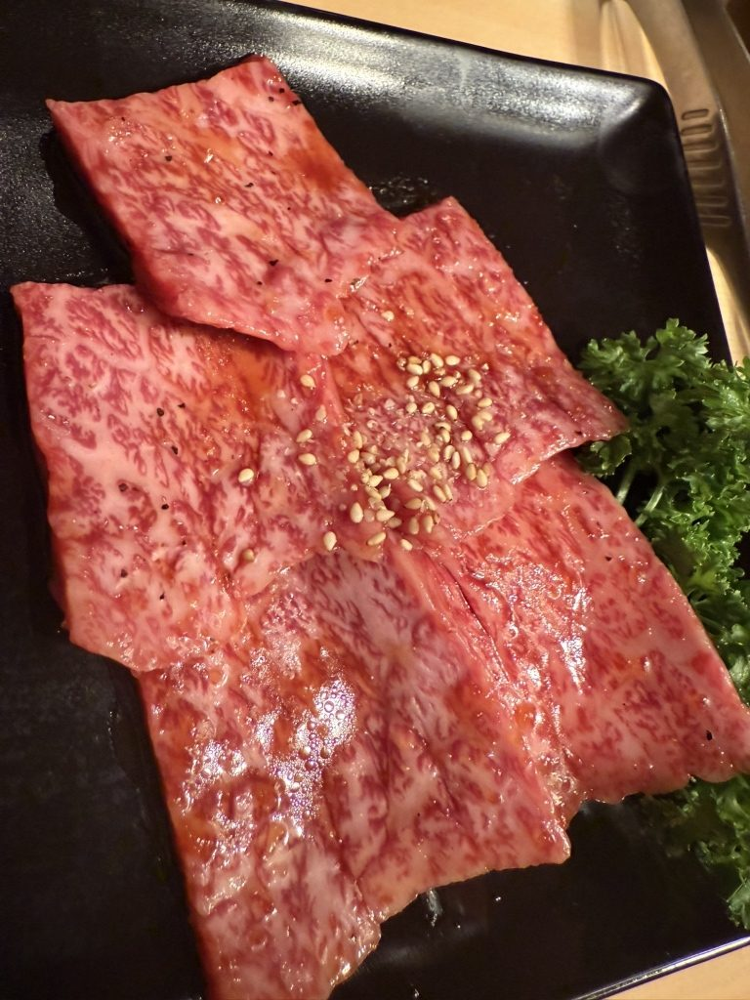
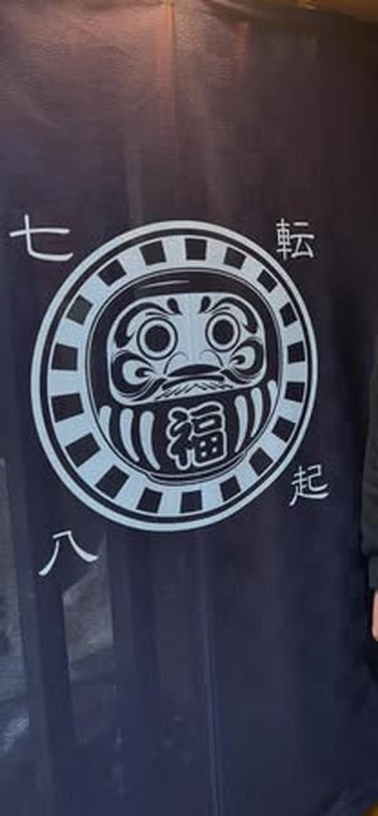
夕方五時、この一枚を掛けるところから当店の一日が始まります。
お出しするのは、東京・芝浦の食肉市場から届いた黒毛和牛です。松阪、近江、前沢、仙台、常陸——その日にいちばん良いものを選んで仕入れております。
おひとりでの焼肉も、小さなお子様とご一緒のご家族も、どうぞお気兼ねなくお越しくださいませ。
全国の銘柄牛が集まる東京・芝浦の食肉市場で選び、その日のうちに古河へ運びます。
東京・芝浦 食肉市場全国の銘柄牛が集まる市場で、一頭ずつ選びます。
茨城・古河 焼肉だるま届いたその日に切り出して、網へ。
産地は仕入れの日によって変わります。その日の産地は、店内に貼り出しております。
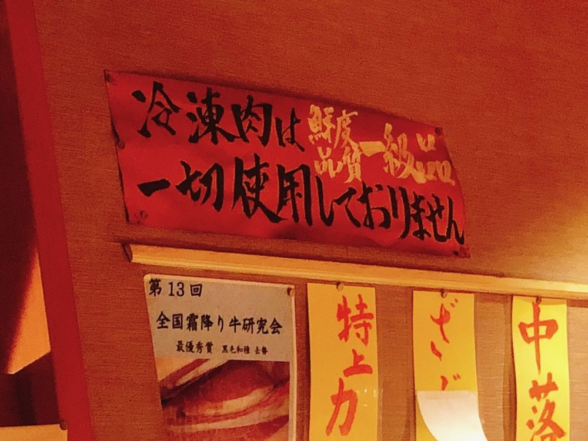
仕入れた肉はすべて生のまま、店で切り分けてお出ししております。
タレも、キムチも、辛味噌も、ナムルも、店で仕込んだものです。
芝浦市場が連休に入る時期は、タン・ハラミ・ホルモン類が在庫のかぎりとなります。あらかじめご了承くださいませ。
その日の入荷から、とくに自信のあるものをご紹介いたします。

厚みを取って切り出します。特上タンは入荷のない日もございます。
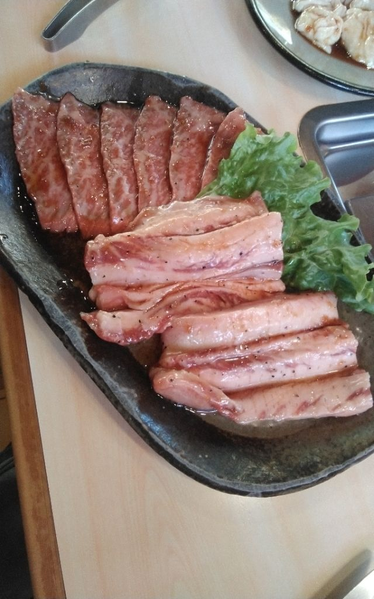
骨のあいだから外した一本を、大きめに切ってお出しします。
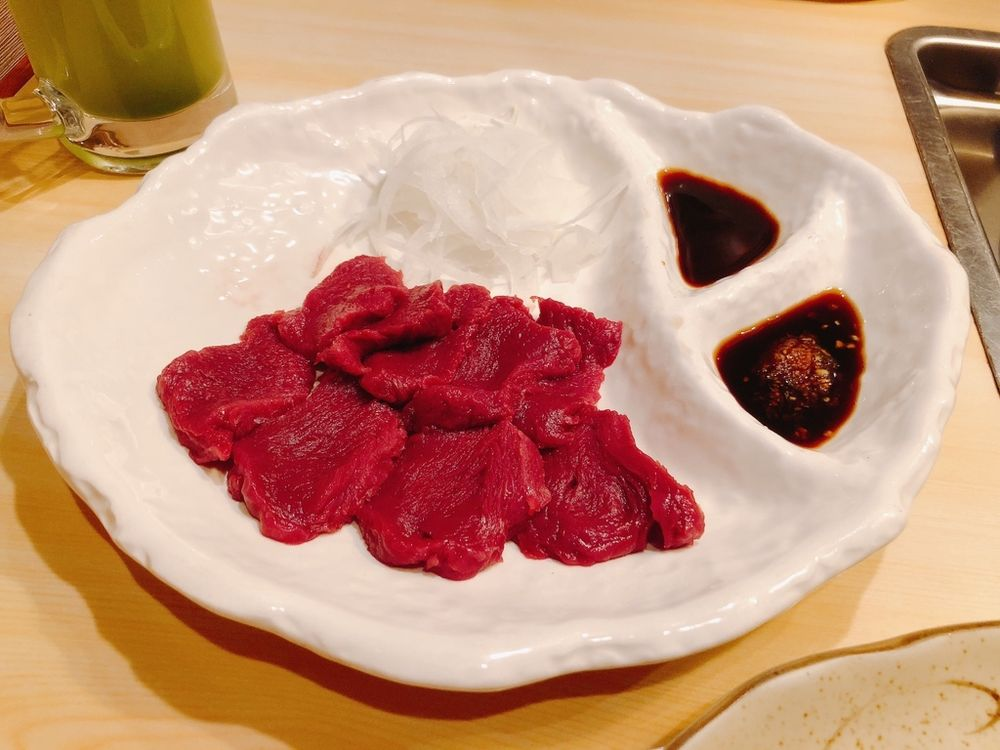
時価にてお出ししております。お一人様一皿までとさせていただきます。
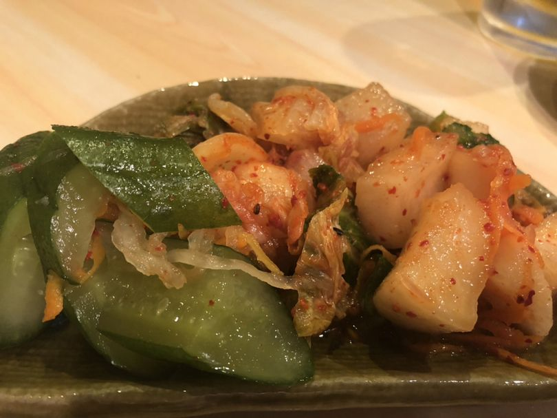
白菜ときゅうり。辛味噌とあわせて、店で漬けております。
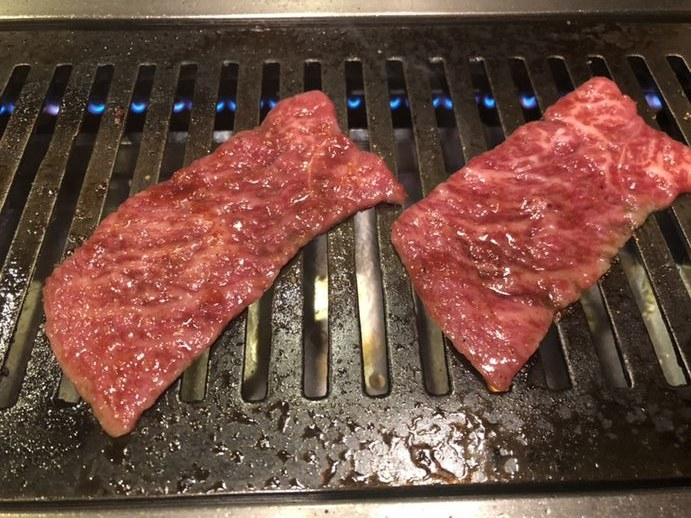
お席は小上がりの座敷が中心です。ロースターは各席に備えております。
おひとりでのご来店も承ります。小さなお子様とご一緒のご家族も歓迎しております。
お支払いは現金のみとさせていただいております。お車は店の前と脇にお停めいただけます。
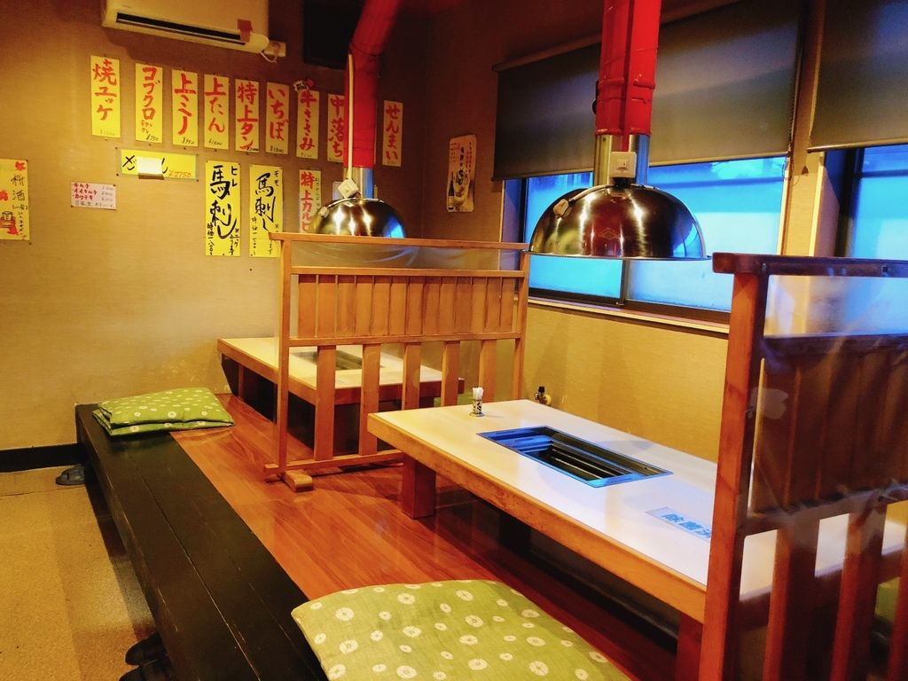
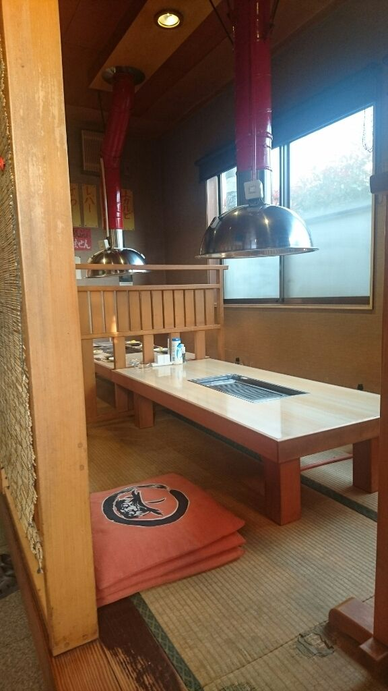
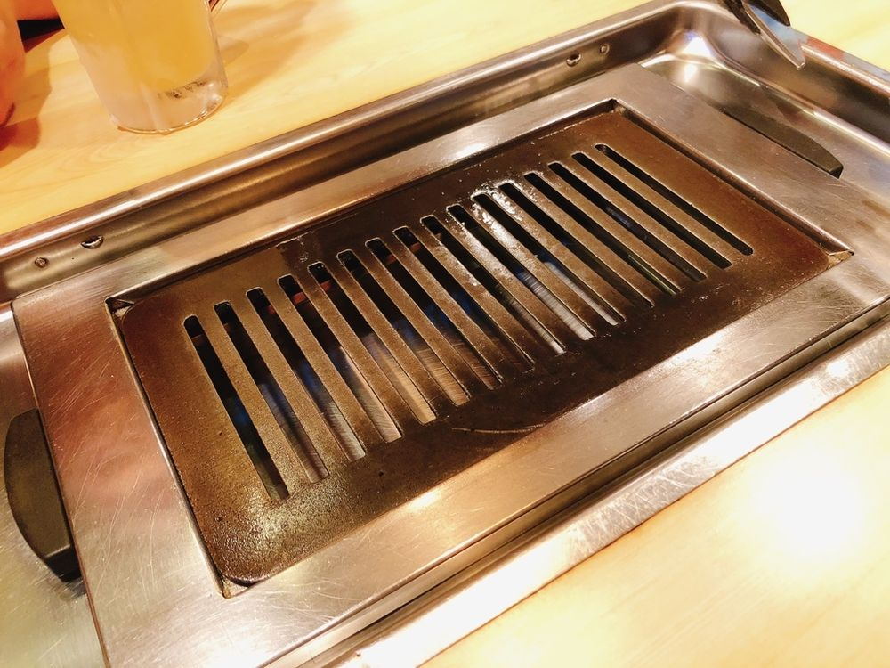
冷凍は一切使わずに、生肉だけを提供。（中略）ここ数年で食べた肉で1番美味い。
お客様の声より
使用する牛肉も全て納得の国産ブランド牛！ タレやサイドメニューにいたっても既製品に頼らずすべて自家製
お客様の声より
センマイ刺しに至っては、何が素晴らしいって自家製のタレが素晴らしい！ 爽やかな酸味に辛みが絶妙
お客様の声より
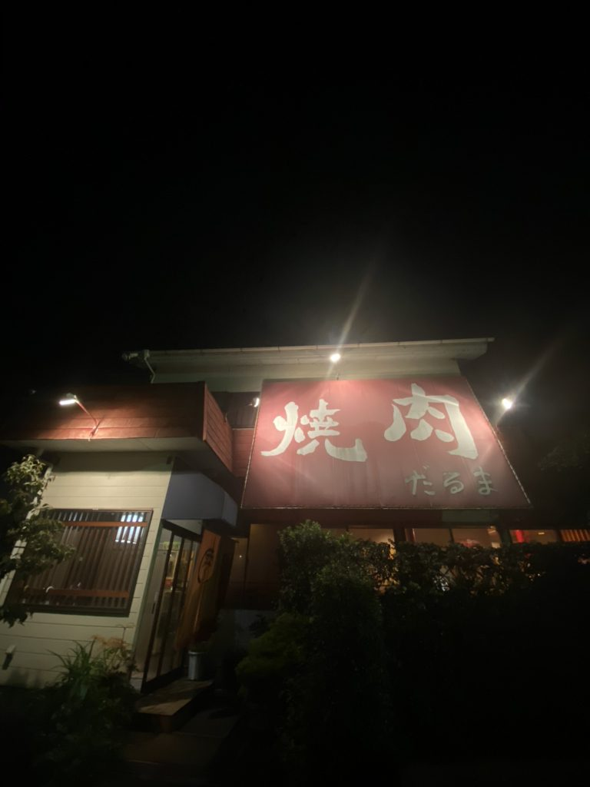
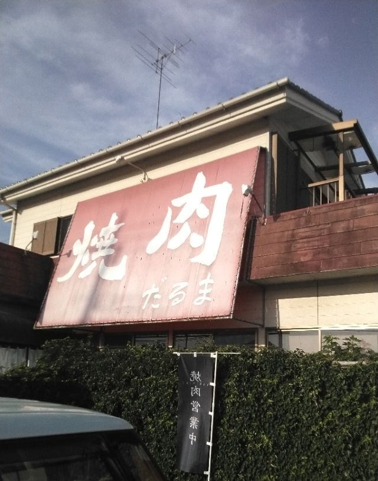
| 住所 | 〒306-0231 茨城県古河市小堤1430-2 |
|---|---|
| 電話 | 0280-98-5507ご予約のお電話は16時からお受けしております |
| 営業時間 | 17:00〜22:00夜の営業のみでございます |
| 定休日 | 火曜日月に一度ほど、月曜も続けてお休みをいただきます。その月のお休みは公式Instagramのカレンダーでお知らせしております |
| お席 | 小上がりの座敷が中心おひとり様・お子様連れのご家族も歓迎しております |
| 駐車場 | ございます（店の前と脇） |
| お支払い | 現金のみ |
| お持ち帰り | 承っておりません店内でのお食事のみとさせていただいております |
| @yakinikudarumaその月のお休みと、その日の仕入れをお知らせしております |